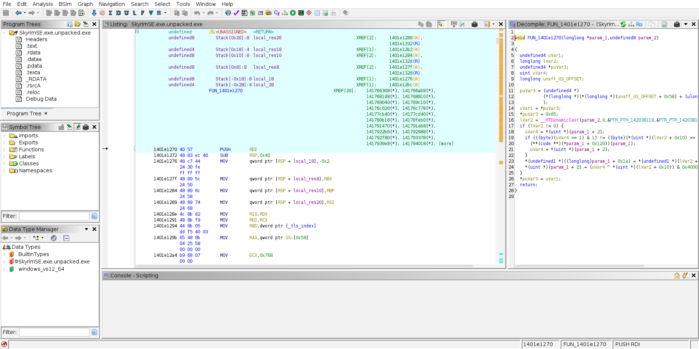
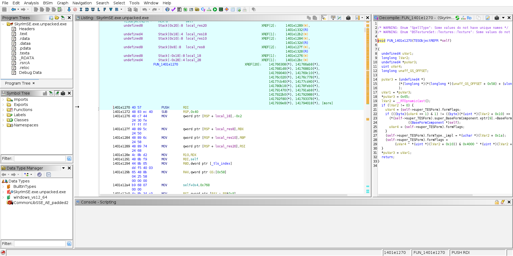

type-importer
working v0.1 MVP C++ headers → Ghidra .gdt type archives, verified against the headers' own static_asserts.
The problem
CommonLibSSE-NG contains thousands of reverse-engineered C++ class definitions — struct layouts,
vtables, bitfields. Getting them into Ghidra currently means either (a) hunting for a floating
types.h file on a Discord server, or (b) manually recreating every struct by hand,
field by field, from source.
The solution
A parser pipeline that reads CommonLibSSE-NG headers through libclang and emits Ghidra Data Type
Archives (.gdt) and, eventually, IDA Type Libraries (.til). It's built on
playday3008/GhidraClangPoweredParse
(a libclang-based Ghidra extension), vendored as a submodule and patched with real, root-caused fixes
for the C++-template-heavy shapes this codebase actually uses.
- Primary approach: libclang preprocessing → flattened C-compatible structs → Ghidra's Java type-manager API
- Handles:
BSTArray<T>,REL::Relocation,stl::enumeration, multiple inheritance (including template-specialization base classes), MSVC bitfield packing,std::-qualified builtin types
Before / after, in Ghidra itself
Both screenshots below are the same real SkyrimSE.exe (Steamless-unpacked,
AE build 24604991), the same function (FUN_1401e1270), the
same address — in Ghidra 12.1.3. The "before" shot is a completely separate,
freshly-imported Ghidra project with no archive ever applied; not an undo of the "after" one.

FUN_1401e1270(longlong *param_1, undefined8 param_2), *(uint *)(param_1 + 2)-style raw offset arithmetic.
super_TESForm.formFlags and formType._impl instead of raw offsets">.gdt applied. FUN_1401e1270(TESObjectREFR *self), self->super_TESForm.formFlags and .formType._impl.
The crash-triage angle: a crash log or disassembly hands you a raw address and an offset —
[rcx+0x10], [rcx+0x1a] — of some struct. The type archive tells you
what those offsets mean. (To be clear: this makes the binary readable, it does not prevent
crashes.) See the repo's full demo writeup
for the SteamStub-unpacking step and a plain-text diff of the same before/after.
The honest accuracy numbers
The TESForm → TESObject → TESBoundObject → TESObjectREFR hierarchy (AE 1.6.1170) resolves
to byte-accurate layouts, cross-checked three independent ways: the headers' own static_asserts,
hand-derived offset math, and real clang-cl compilation.
Beyond that hierarchy, a full-namespace coverage sweep checks every class in RE/ against
its own static_assert, gated in CI so a change can never silently regress a previously-correct
class:
sizeof exactly matches the size the header's own static_assert demands for
that runtime. It is a size check, not a per-field diff — two different field layouts can share a total
size, so this can't catch a wrong layout that happens to add up. Field offsets are additionally
hand-verified for the core TESForm→TESObjectREFR chain and cross-checked
against the running game for 11 hotspot classes by runtime-harness's LayoutValidator, but are
not independently verified for every class. Classes with no static_assert in the headers
are reported as unverifiable, never counted as accurate.
The last 2 hotspot classes (BaseExtraList/ExtraDataList, which the AE headers
themselves compile empty via a runtime-relocated-member pattern) have real inferred sizes — mined from
the actual REL::RelocateMember call sites in source — instead of silent 1-byte placeholders.
Quick Start
1. Clone (this repo uses git submodules)
git clone --recurse-submodules https://github.com/ByteBard97/skyrim-re-toolkit.git
# Already cloned without --recurse-submodules? Run:
# git submodule update --init --recursive2. Prerequisites
None of these are vendored in-repo (large and/or license-bearing):
| Requirement | Why |
|---|---|
| JDK 22+ recommended | Panama FFI. JDK 21's preview FFM mode gives silently wrong struct sizes at full-sweep scale (fine for the small example below). Temurin works fine either way. |
| Ghidra 12+ | Provides the type-manager Java API this pipeline runs against headlessly — no GUI/project needed. |
A real libclang.so, Clang 19+ |
MSVC STL's own headers reject older Clang versions — the libclang-14 many Linux distros ship is not sufficient. |
| Windows SDK + MSVC CRT/STL headers | Via xwin: xwin --accept-license splat --output <dir> (Microsoft's license terms apply — don't commit or redistribute the output). |
3. Generate a .gdt yourself
cd type-importer/scripts
JAVA_HOME=/path/to/jdk-22 \
GHIDRA_INSTALL_DIR=/path/to/ghidra_12 \
LD_LIBRARY_PATH=/path/to/dir-containing-libclang.so \
./generate_gdt.sh /path/to/xwin-splat-dir /tmp/CommonLibSSE_AE.gdt \
RE/T/TESForm.h RE/T/TESObject.h RE/T/TESBoundObject.h RE/T/TESObjectREFR.h
This patches the vendored parser submodule, builds it, runs it against the requested headers, writes a
real .gdt, and reverts the submodule back to pristine when it's done.
4. Load it into Ghidra
File → Import File (select SkyrimSE.exe) →
Window → Data Type Manager → File → Add Archive → select your generated .gdt →
right-click → Apply Function Data Types.